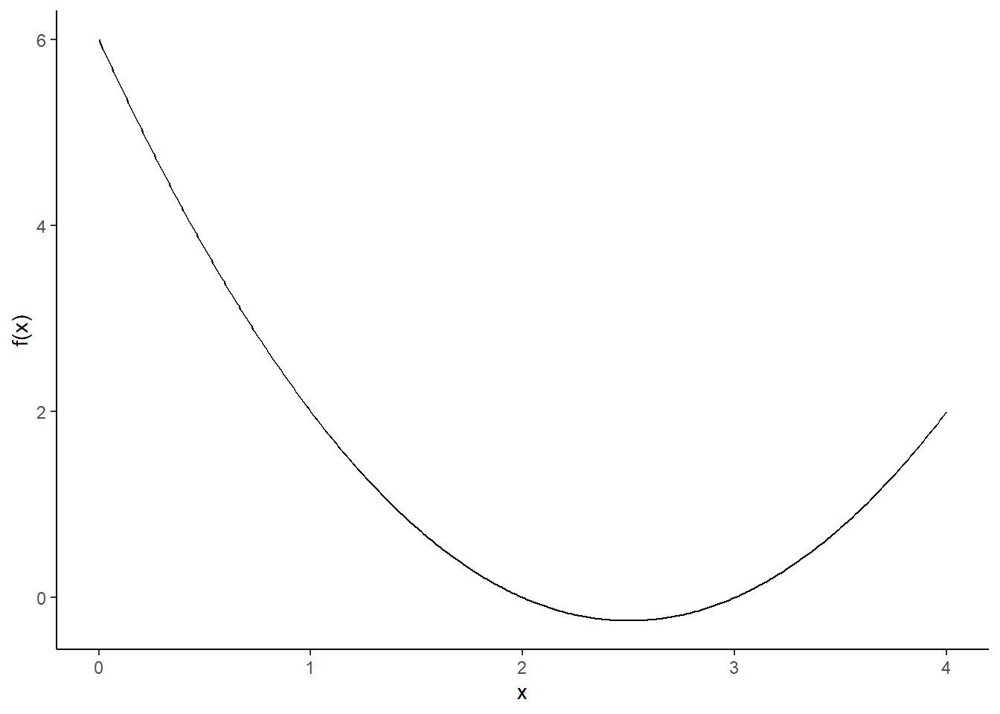
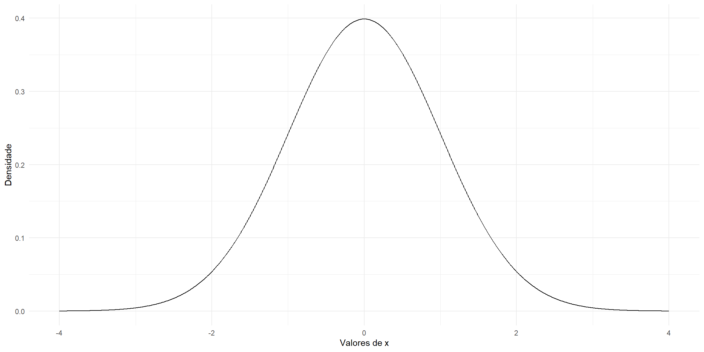
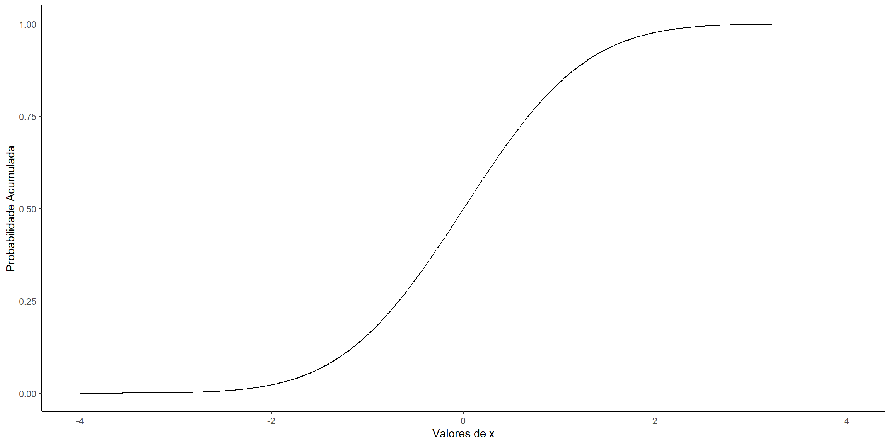
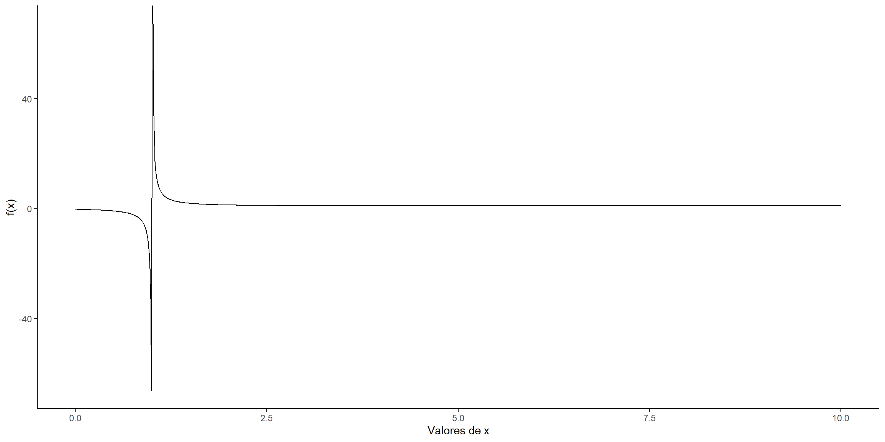
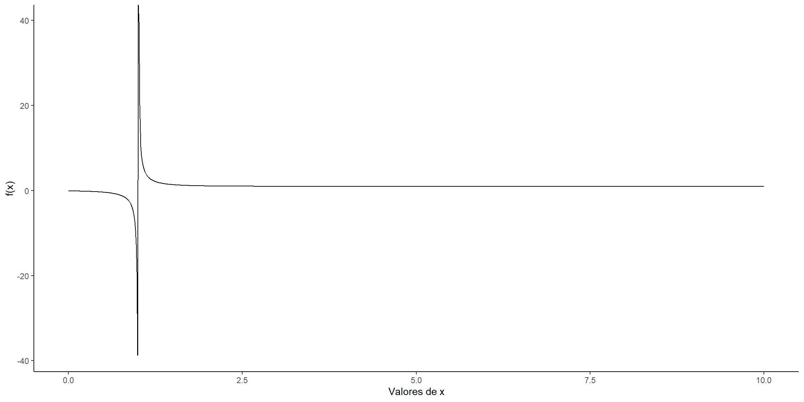

Nas tarefas abaixo iremos trabalhar vários pontos importantes para a área de Estatísticas Educacionais. Execute-as tanto no Excel como no R, duas ferramentas bem importantes. Em qualquer caso, quando necessário o uso de parâmetros (assim como coeficientes e constantes), atribua valores previamente (tipo a = 2, b = 3, D = 1 etc.) no R ou coloque-as em células e atribua nomes às células ou intervalos, no Excel.
Google Classroom: nomeie o arquivo de forma que ele possa ser facilmente identificado, tal como: “Estatísticas Educacionais– Relatório x– Nome Sobrenome.pdf”. Havendo mais de um arquivo, o nome deve ser o mesmo, mas comumcomplemento, tipo versão 1, versão 2,…, ou simplesmente v1, v2,…
PRAZO DE ENTREGA: ver Google Classroom (como todo cliente, há urgência). A Multa Contratual é de 10% por dia de atraso, se permitido.
FORMATO DE ENTREGA: criar um arquivo em RMARKDOWN ou QUARTO para apresentação dos relatórios.
1. Gráfico de Funções
1.1. Gerar o gráfico da função \(f(x) = x^{2} - 5 x + 6\), \(x \in [0, 4]\).
Código
# Valores de xx <-seq(0, 4, by =0.01)# Função quadráticafx <- x^2-5* x +6# Criando Data Frame para uso do ggplot2df <-data.frame(x = x, fx = fx)# Construindo o gráficoggplot(data = df, aes(x = x, y = fx)) +geom_line() +labs(x ="x", y ="f(x)") +theme_classic()

Função Quadrática.
1.2. Gerar o gráfico da Função Densidade de Probabilidade e a Função de Distribuição Acumulada da \(N(0, 1)\).
Código
# Criar um conjunto de valores para o eixo xx <-seq(-4, 4, by =0.01)# Criar o data frame para os dadosdados <-data.frame(x = x, densidade =dnorm(x, mean =0, sd =1), acumulada =pnorm(x, mean =0, sd =1))# Plotar a função densidade de probabilidadeggplot(dados, aes(x = x, y = densidade)) +geom_line() +labs(x ="Valores de x", y ="Densidade") +theme_minimal()# Plotar a função de distribuição acumuladaggplot(dados, aes(x = x, y = acumulada)) +geom_line() +labs(x ="Valores de x", y ="Probabilidade Acumulada") +theme_classic()

(a) Função Densidade de Probabilidade N(0,1)

(b) Função de Distribuição Acumulada N(0,1)
Figura 1: Distribuição Normal
1.3. Gerar o gráfico da função \(f(x) = \dfrac{1}{1 + \exp\{- Da(x -b)\}}\), com a = 1,5, b = 1 para D = 1 e D = 1,7.
Código
a <-1.5b <-1D1 <-1D2 <-1.7x <-seq(0, 10, by =0.01)fx1 <-1/ (1-exp(-D1*a*(x - b)))fx2 <-1/ (1-exp(-D2*a*(x - b)))df <-data.frame(x = x, fx1 = fx1, fx2 = fx2)ggplot(data = df, aes(x = x, y = fx1)) +geom_line() +labs(x ="Valores de x",y ="f(x)") +theme_classic()ggplot(data = df, aes(x = x, y = fx2)) +geom_line() +labs(x ="Valores de x",y ="f(x)") +theme_classic()

(a) a = 1,5; b = 1; D = 1

(b) a = 1,5; b = 1; D = 1,7
Figura 2: Funções com múltiplos parâmetros.
Código fonte
```{=html}<style> body{text-align: justify}</style>```:::: progress::: {.progress-bar style="width: 100%;"}:::::::```{r, include=FALSE}library(ggplot2)```# Tarefa 1 {.unnumbered}Nas tarefas abaixo iremos trabalhar vários pontos importantes para a área de Estatísticas Educacionais. Execute-as tanto no Excel como no **`R`**, duas ferramentas bem importantes. Em qualquer caso, quando necessário o uso de parâmetros (assim como coeficientes e constantes), atribua valores previamente (tipo `a = 2`, `b = 3`, `D = 1` etc.) no R ou coloque-as em células e atribua nomes às células ou intervalos, no Excel.**Google Classroom:** nomeie o arquivo de forma que ele possa ser facilmente identificado, tal como: “Estatísticas Educacionais– Relatório x– Nome Sobrenome.pdf”. Havendo mais de um arquivo, o nome deve ser o mesmo, mas comumcomplemento, tipo versão 1, versão 2,..., ou simplesmente v1, v2,...**PRAZO DE ENTREGA:** ver Google Classroom (como todo cliente, há urgência). A Multa Contratual é de 10% por dia de atraso, se permitido.**FORMATO DE ENTREGA:** criar um arquivo em RMARKDOWN ou QUARTO para apresentação dos relatórios.------------------------------------------------------------------------## 1. Gráfico de Funções {.unnumbered}**1.1. Gerar o gráfico da função $f(x) = x^{2} - 5 x + 6$, $x \in [0, 4]$.**```{r}#| fig-cap: "Função Quadrática."# Valores de xx <-seq(0, 4, by =0.01)# Função quadráticafx <- x^2-5* x +6# Criando Data Frame para uso do ggplot2df <-data.frame(x = x, fx = fx)# Construindo o gráficoggplot(data = df, aes(x = x, y = fx)) +geom_line() +labs(x ="x", y ="f(x)") +theme_classic()```**1.2. Gerar o gráfico da Função Densidade de Probabilidade e a Função de Distribuição Acumulada da $N(0, 1)$.**```{r}#| label: fig-2q#| layout-ncol: 2#| fig-cap: "Distribuição Normal"#| fig-subcap:#| - "Função Densidade de Probabilidade N(0,1)"#| - "Função de Distribuição Acumulada N(0,1)"#| fig-height: 6#| fig-width: 12# Criar um conjunto de valores para o eixo xx <-seq(-4, 4, by =0.01)# Criar o data frame para os dadosdados <-data.frame(x = x, densidade =dnorm(x, mean =0, sd =1), acumulada =pnorm(x, mean =0, sd =1))# Plotar a função densidade de probabilidadeggplot(dados, aes(x = x, y = densidade)) +geom_line() +labs(x ="Valores de x", y ="Densidade") +theme_minimal()# Plotar a função de distribuição acumuladaggplot(dados, aes(x = x, y = acumulada)) +geom_line() +labs(x ="Valores de x", y ="Probabilidade Acumulada") +theme_classic()```**1.3. Gerar o gráfico da função $f(x) = \dfrac{1}{1 + \exp\{- Da(x -b)\}}$, com `a = 1,5`, `b = 1` para `D = 1` e `D = 1,7`.**```{r}#| label: fig-3q#| layout-ncol: 2#| fig-cap: "Funções com múltiplos parâmetros."#| fig-subcap:#| - "a = 1,5; b = 1; D = 1"#| - "a = 1,5; b = 1; D = 1,7"#| fig-height: 6#| fig-width: 12a <-1.5b <-1D1 <-1D2 <-1.7x <-seq(0, 10, by =0.01)fx1 <-1/ (1-exp(-D1*a*(x - b)))fx2 <-1/ (1-exp(-D2*a*(x - b)))df <-data.frame(x = x, fx1 = fx1, fx2 = fx2)ggplot(data = df, aes(x = x, y = fx1)) +geom_line() +labs(x ="Valores de x",y ="f(x)") +theme_classic()ggplot(data = df, aes(x = x, y = fx2)) +geom_line() +labs(x ="Valores de x",y ="f(x)") +theme_classic()```:::: progress::: {.progress-bar style="width: 100%;"}:::::::